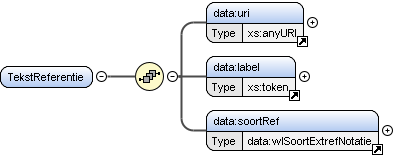

Element data:TekstReferentie
| Namespace | https://standaarden.overheid.nl/stop/imop/data/ | ||
| Definitie |
Een verwijzing naar een elders gepubliceerde tekst of tekstonderdeel, middels een verplichte URI, een verplicht label en optioneel de eId van het tekstonderdeel. De Tekstreferentie kan dynamisch naar een Work of statisch naar een Expression verwijzen. |
||
| Informatie |
Voorbeeld van een verwijzing middels een AKN Let op:
Voorbeeld van een statische verwijzing middels een Voorbeeld van een dynamische verwijzing middels een URL Let op
|
||
| Informatiemodel | Tekstreferentie (entiteit) | ||
| Verwijzingen | cons:url, tekst:ExtRef | ||
| Diagram |

|
||
| Eigenschappen |
|
||
| Gebruikt door |
|
||
| Kinderen | Element data:label, Element data:soortRef, Element data:uri | ||
| Beperkingen |
|